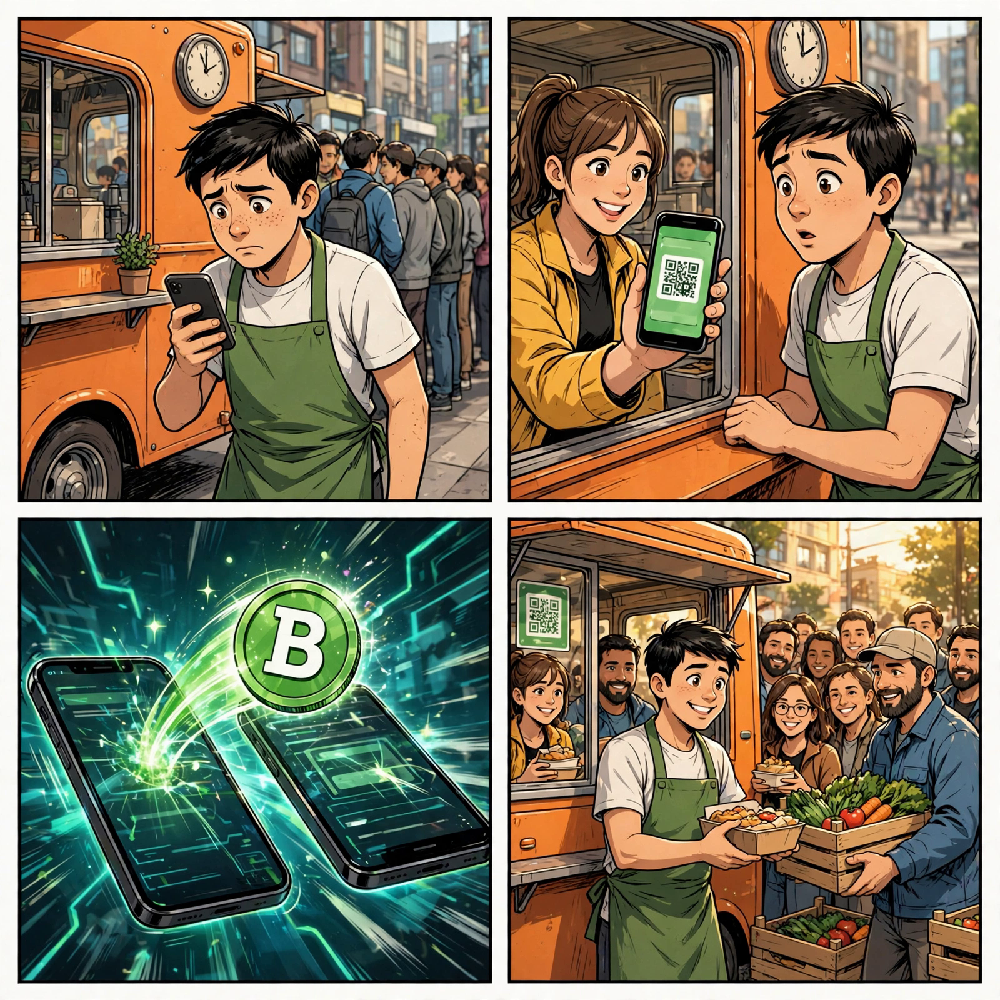

How Bitcoin Cash saved the lunch rush — a four-panel comic about a stuck bank transfer, one QR scan, and money that moves at the speed of lunch.

11:40 AM. The lunch queue is forming — but Rafi's supplier is still waiting on yesterday's bank transfer. No payment, no ingredients. No ingredients, no lunch.
A regular spots the panic. “Forget the bank queue,” she says. “Pay the way I'd pay you — Bitcoin Cash.” One scan of the QR code…
…and it's already there. Seconds, not days — and the fee is less than a penny. No account to open. No permission to ask. Phone to phone, like handing over cash.
By noon the supplier is paid, the crates are in, and the whole queue eats. Rafi tapes a QR code to the window. Money that moves at the speed of lunch.
“Lunch Money” is an original work created for BCH BLAZE 2026: story, script and captions written for this hackathon, illustrations AI-generated (a medium the Media Track explicitly welcomes), and this page hand-built with plain HTML/CSS. No stock art, no borrowed characters, no recycled posts.
Facts above are drawn from bitcoincash.org (fees under a penny, transact in seconds, 21M supply, CashTokens 2023, ABLA 2024) and The Bitcoin Cash Podcast FAQ at bitcoincashpodcast.com (how 0-conf works; ABLA's adaptive block-size limit with a 32 MB minimum). Event rules: BCH BLAZE 2026 on DoraHacks. The food truck, its queue and its QR code are illustrative fiction; the wallet screens are generic mock-ups, not a specific app.